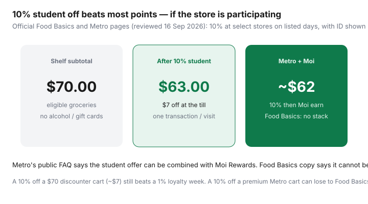

Food & Groceries · Canada
Canadian student grocery discounts: Food Basics, Metro, and how to stack them
Students miss weekday percentage-off programs, or they shop the pretty banner beside campus because it is on the walk home. A 10% student discount at a participating Food Basics or Metro is one of the few grocery levers that beats a typical loyalty week — if the store is on the list, the day is right, and you show ID before the cashier totals the cart.
This is Ontario-heavy on purpose: Food Basics and Metro publish student programs there. Quebec Metro locations have their own weekday windows. It is not a U.S. campus meal-plan explainer and it is not a promise that every store in Canada gives 10% off with a student card.
Disclosure: SPC-style student memberships, meal-kit student trials, and cashback portals are offer types. Saving Optimizer may earn a commission if we later add those links. We do not currently claim partnerships with Metro, Food Basics, or SPC. The till discount works with a student ID and a participating store.
Key takeaways
- Food Basics: 10% Tuesdays, in-store, participating locations only, valid post-secondary ID, one transaction per student per day in community reports of the posted rules.
- Metro: 10% at participating stores; some daily, some Tuesday-only; Ontario vs Quebec calendars differ. Verify the store page.
- Metro’s FAQ allows stacking with Moi. Food Basics says no combining with other offers.
- 10% off a premium Metro cart can still lose to Food Basics or No Frills shelf prices. Run both.
- International students: get ID, then shop a discounter. Residence convenience is a tuition surcharge.
Known student discount days and ID rules
Show ID before purchase. Digital IDs are often accepted (Metro says so explicitly). Exclusions on both banners’ public copy typically include alcohol, tobacco, lottery, gift cards, transit tickets, stamps, prescriptions, and behind-the-counter pharmacy. If your cart is half gift cards, you are not getting 10% off groceries.

Food Basics Tuesday-style programs (verify locally)
Food Basics’ official student page (reviewed 16 Sep 2026) headlines every Tuesday, in-store only, at listed locations. Fine print: 10% only on select days at select stores; valid post-secondary student ID shown prior to purchase; cannot be combined with any other offer; Metro Ontario Inc. may amend or terminate without notice.
Stores named on that page at review time included locations in Guelph, Hamilton, Kingston, Mississauga, London (Oxford and Wonderland), and Windsor. That is a short list. If your campus Food Basics is not on it, you do not have a Tuesday 10%. Do not argue with a cashier using a 2024 TikTok.
Verify before you build a semester around Tuesday: open foodbasics.ca/student-discount the week you move. Participating stores change. Narcity and campus Facebook groups go stale.
Metro student offers at participating stores
Metro’s student program also advertises 10% off for post-secondary students at participating locations, with school lists and days set per store. Ontario reporting (Narcity; Capital Current on Ottawa, 2025) has described a mix of daily stores and Tuesday-only stores — and some Ottawa locations moving from seven days to Tuesdays. Quebec coverage has described shorter weekday windows at a handful of stores.
The official FAQ (public copy reviewed Sep 2026) also notes: limited to one purchase per eligible visit; digital ID OK; exclusions similar to Food Basics, plus some banners calling out Starbucks or Nature’s Signature. Always read the store’s current poster.
Metro is often more expensive than Food Basics on staples. A 10% Metro discount on a $90 convenience cart is $9 off a cart that might have been $70 at Food Basics. Use Metro’s student day when it is your closest kitchen or when Moi plus 10% still wins the receipt — not because the lighting is better.
SPC and campus cards: what’s grocery-relevant
Student Price Card / similar campus discount apps are strong at restaurants, clothing, and entertainment. Grocery is thin and local. Check the live partner list for your city. A campus meal plan leftover is not a grocery strategy. Some universities run their own grocery or bulk-buying clubs — that is a first-week orientation question, not a national coupon.
Bulk Barn and other chains sometimes run student days; they are not a weekly produce system. Treat them as a spice-and-snack side quest.
Stacking with Moi/PC/Scene+ carefully
| Banner | Student % | Loyalty stack |
|---|---|---|
| Food Basics (participating) | 10% Tue, in-store | Cannot combine with any other offer (official copy). Moi at Food Basics is generally offers-only in 2026 explainers anyway. |
| Metro (participating) | 10% on the store’s days | FAQ: combinable with Moi Rewards; not with other promotions. |
| No Frills / Superstore | No national student % | PC Optimum offers + Won’t Be Beat. Often cheaper than 10% off Metro. |
| FreshCo / Sobeys | No reliable national student % | Scene+ offers. Some campus-adjacent Sobeys have run local student days historically — verify the store, do not assume. |
A no-fee card that matches the till still helps — see grocery cards — but interest on a student Mastercard erases 10% immediately. Debit is allowed.
Student meal prep on a tight schedule
Borrow the $300 single-person playbook at whatever number your city needs. One Sunday pot (chilli, dal, pasta sauce), eggs, frozen veg, oats. Shop Tuesday if that is your 10% day — plan the list Monday night. Lab days get leftovers, not a $14 campus sandwich unless the sandwich is the social envelope.
Residence kitchens: lock a bin, label it, do not buy a Costco meat pack without freezer space. Flashfood only if the Loblaw store is on the bus route and you can cook that night.
International student tips for first-term shopping
- Get student ID in week one. The discount is not a SIN problem; it is an ID problem.
- Do not treat the campus convenience store as Canada. Find Food Basics, No Frills, FreshCo, Maxi, Super C, or an ethnic grocer on transit.
- Install Flipp. Unit prices are on the shelf tag — the small number is the one that matters.
- Bring a reusable bag. Some stores still charge. Basic groceries are generally GST/HST-zero-rated; snacks and prepared foods often are not.
- Share bulk only with people who will actually pay you back. First-term Costco without a car is how meat spoils.
- If English labels are new, shop one cuisine you already cook, then expand. Waste is expensive in a small fridge — cut food waste systems.
The semester stays solvent when Tuesday (or your store’s day) is a calendar event and the premium banner is a rare stop. 10% is a strong lever. Showing up at the wrong store on a Wednesday is just groceries.
Sources & date stamps
- Food Basics official student discount page (participating store list and 10% Tuesday terms, reviewed 16 Sep 2026).
- Metro official student discount program FAQ (ID, Moi stacking, exclusions, one purchase per eligible visit; reviewed Sep 2026).
- Narcity roundup of Canadian grocery student discounts (store-count snapshots — verify live pages).
- Capital Current, Ottawa Metro Glebe moving from daily to Tuesday student discount (2025 reporting on how fast local calendars change).
Frequently asked questions
Does every Food Basics give students 10% off on Tuesdays?
No. The official Food Basics student page lists participating stores and says the 10% offer is only valid on select days at select locations. Show a valid post-secondary student ID before purchase. The list changes — check foodbasics.ca/student-discount.
Can I stack the Metro student discount with Moi points?
Metro’s public student-discount FAQ says yes: you can earn and redeem Moi after the student discount is applied, and the offer cannot be combined with other promotions except Moi Rewards. Food Basics copy says the student offer cannot be combined with any other offer.
Do I need a physical student card?
Metro’s page says digital copies of student ID are accepted, plus proof of enrolment from an eligible nearby school at some stores. Cashiers can still ask for a clear, current ID. Screenshot a backup.
Is SPC useful for groceries?
Mostly at the edges — some restaurant and retail partners, not a substitute for a 10% grocery till discount. Check the live SPC app for grocery-adjacent banners in your city rather than assuming a national grocery deal.
I’m an international student. When should I shop?
As soon as you have school ID. First-term convenience stores and campus cafés are the expensive default. Learn Flipp, find the participating Food Basics or Metro, and use a discounter list — not the premium banner attached to residence.